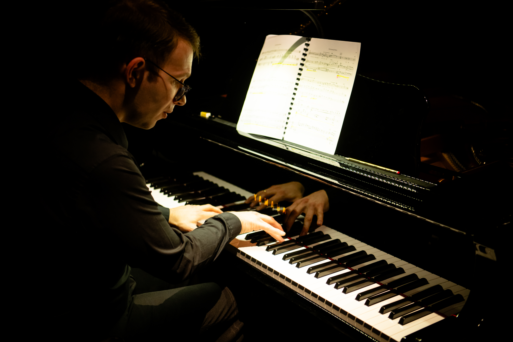

Dave Wishart is a Scottish pianist, conductor, and vocal coach specialising in contemporary classical opera and experimental music. Since 2019 he has worked repeatedly as a guest at Deutsche Oper Berlin. From 2020-2025 he was a member of the ensemble at Theater Vorpommern in Stralsund. Over the past decade he has collaborated with a wide range of singers, composers, and ensembles throughout Europe.
Dave is known for his calm, encouraging approach and his ability to make even the most rhythmically or harmonically complex scores feel approachable and expressive. His coaching focuses on clarity, musicality, and communication — helping each performer find freedom and authenticity in performance.
- Interested in working with Dave? Check out the services page for details about accompanying, teaching/coaching, or arranging.
- Want to see samples of Dave's work? Have a look at the media gallery for recordings and photos.
- See upcoming events on the schedule page.
- Learn more about Dave's background by reading his biography.

"David Wishart moves effortlessly between piano and keyboard, leading and accompanying with sensitivity and stylistic assurance"
Opernglas 4/2022 on Sprich mit mir!